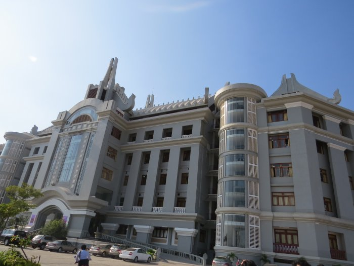
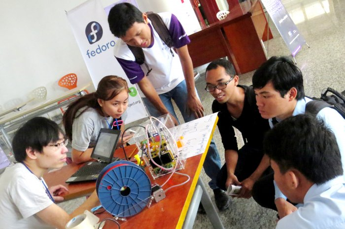

FOSSASIA 2014 Wrap up

3 Days of Pure Knowledge Sharing, 71 International Speakers, 15 Presenters from Cambodia, 121 Talks, Workshops and Panels, 8 tracks per day, Hands-on Labs and Hacking practice for everyone.
More than 1000 participants from Cambodia and around Asia joined FOSSASIA 2014 in Phnom Penh Cambodia. 900 developers, designers, students company representatives from leading enterprises participated at the main event at Norton University on February 28 and March 1. In the following days trainings took place at the Open Institute Phnom Penh, InSeed Cambodia, and the startup place Small World.
Schedule
Please click above to download the detailed schedule as pdf.

Agenda
The main topics of FOSSASIA 2014 are all related to Free and Open Source Software with talks and workshops about Mobile Solutions, Web Technologies, Linux Operating Systems, Open Education and Open Map solutions.
| Day | Time | Event | Location |
| Thursday, Feb.27 | 19.00 | Pre-Meeting | Angkor International Hotel, Social Meet up |
| Friday, Feb.28 | 9.00-12.00 | Opening Talks and Keynotes | Norton University Main Hall |
| 12.00-17.00 | Talks and Workshop Sessions | Norton University Class Rooms and Main Hall | |
| Saturday, Mar.1 | 9.00-17.00 | Community Day (talks, workshops) | Norton University Class Rooms and Main Hall |
| Evening | Social Event | Location in the city to be announced | |
| Sunday, Mar. 2 | 9.00-15.30 | Phnom Penh Hands-on Day | Open Institute |

Hong Phuc Dang (Vietnam) and Chantra Be (Cambodia) from the organization team

Norton University Phnom Penh, FOSSASIA 2014
Friday February 28 - Opening and Keynotes

| Time | Main Hall |
| 09:00 | Organizers Welcome |
| 09:05 | Welcome of Rector of Norton University |
| 09:10 | Keynote address of Anna Maj Hultgård, Ambassador of the Swedish Embassy |
| 09:15 | Opening remark by Minister of Information Khieu Kanharith |
| 09:20 | Technologies for Development, Development Innovations, Greta Greathouse |
| 09:25 | Keynote Google Summer of Code, Past, Present and Future; Cat Allman |
| 09:50 | Hello International Open Source Students & Short Break |
| 10:00 | Keynote MariaDB, Colin Charles |
| 10:20 | Wi-Fi Mesh for Hotels, Malls and Community Networks, Bastian Bittorf |
| 10:30 | Open Source at Ezecom, Cambodias Premium ISP, Glenn Miller |
| 10:40 | Keynote Doing Business with TYPO3 in Cambodia, Dominik Stankowski |
| 11:00 | From Open Source to Open Government, Chia-liang Kao |
| 11:10 | OpenStreetMap - Free Map of the World, Kate Chapman |
| 11:20 | Fedora Linux, Tuan Truong |
| 11:30 | [email protected], Jon Phillips |
| 11:40 | Orange HR for small to medium sized businesses, Sopheakmonkol Sok |
| 11:50 | Open source implementation of Chinese virtual singer, Ying-Chun Liu (Paul Liu) |
| 12:00 | Let's raise kids up! Pockey Lam |
| 12:10 | End of Morning Sessions |


Schedule Friday February 28

| Day - Track 1-4 | ||||
| Time | Main Hall | Mobile and Web | Web CMS and Frameworks | Community |
| 13:00 | How to build your own local Internet with standard Wi-Fi Routers", Bastian Bittorf, 25 min. | PhoneGap, Danet Krueng, 55 min. | TYPO3 Enterprise Features, Sengchheang Chhun, 55 min. (Khmer) | KDE and the FOSS community in India: A Revolution in Itself, Yash Shah, 25 min. |
| 13:30 | Panel: Network and Internet Development in Cambodia, Glenn Miller (CIO Ezecom, Bastian Bittorf (CEO Bittorf Wireless), Kheng Vantha (Co-founder Biz Solution), Mario Behling (CEO MBM International) | Open Source in Hong Kong, Wan Leung Wong, 25 min. | ||
| 14:00 | Easy Android app creation for everyone, Preetam Rai, 1h Workshop | SEO Success Factors for Search Engine Friendly Websites, Sophy Prak, 55 min. | Contributing to GNOME, Sindhu Sundar, 1h Workshop | |
| 14:30 | Tinyboy Project - A 3D printer for student, Wan Leung Wong, 25 min. | |||
| 15:00 | WordPress plugin development for brand awareness and profit, Michael Cannon, 25 min. | How to create Firefox OS apps, Biraj Karmakar, 55 min. | Getting started with Rails, Yash Shah, Intensive Workshop, 25 min | How to contribute to Open Source, Phallin Hor, 25 min. (Khmer) |
| 15:30 | Build your web app over the weekend, using Django and continuous deployment to Heroku, Hong Le Viet, 25 min. | TYPO3 FLOW - Web Socket, Chanthou Nim, 55 min. (Khmer) | How to contribute to Debian, Prach Pongpanich, 25 min. | |
| 16:00 | Panel: Women in IT, Hong Phuc Dang (FOSSASIA), Cat Allman (Google), Sindhu Sundar (GNOME), Pockey Lam (Digital Freedom Foundation), Sneha Priscilla Makini (GNU Mailman), Richa Jain (Mediawiki), 1h Panel | Developing Web-apps for FirefoxOS, Sayak Sarkar Workshop 1h | How to ask for help in Open Source projects, Xiangquan Xiao, 25 min. | |
| 16:30 | ||||
| 17:00 | End of Sessions | |||


Schedule Saturday March 1

| Day 2, Track 1-4 | ||||
| Time | Main Hall | Mobile and Web | Web, CMS, Frameworks | Wikipedia and Open Education |
| 09:00 | How to Become a [ Media ] Wiki Hacker, Harsh Kothari, 25 min. | COMPED-First Step towards a Web Literate World, Gauthamraj Elango, 25 min. | Contributing to GNU Mailman with a little help from Django, Sneha Priscilla Makini, 25 min. | Adoption of OpenOffice in Cambodian Education System, Piseth Kheng, 55 min. |
| 09:30 | OpenStreetMap for Disaster Preparedness and Response, Kate Chapman, 25 min. | Open Source Apps on Blackberry devices, Justin Lee, 25 min. | Building Websites with Drupal, Tomo Huynh, 25 min. | |
| 10:00 | Google Code-in, Stephanie Taylor, 25 min. | The Good, The Bad and The Ugly: Walking through a simple Android Application Development, Mohit Kanwal, 1h Workshop | Drupal in local languages to power SMEs, non-profits of emerging countries & Building local language communities, Hari Prasad Nadig, 55 min. | Deploying free educational projects, Pockey Lam, 55 min. |
| 10:30 | Google Summer of Code - Student Lightning Talks and Q&A; Cat Allman, Stephanie Taylor, GSoC students, Moderation: Hong Phuc Dang, Mario Behling, 1.5 h | |||
| 11:00 | Easy and Maintainable Web API for your next Mobile App, Arul Kumaran Ragunathan, 55 min. | Hands-on: WordPress plugin development for brand awareness and profit, Michael Cannon, 1.5h Workshop | FOSS Localization and adoption of FOSS in the education system, Sokhem, Khoem, 55 min. | |
| 11:30 | ||||
| 12:00 | Embracing the Static Web, Lakshan Perera, 25 min. | Open Source technologies that revitalize your phones, Sokha Rum, 1h Workshop | A Pragmatic Stack: K-12 education using FOSS, Lyle Kozloff, 25 min. | |
| 12:30 | Asian Mobile Culture and Who Will Control the Data of the Next Billion Internet Users, Arthit Suriyawongkul. 25 min. | Octopress, Sophearak Tha, 1h Workshop | Khmer Wikipedia and the free knowledge movement in Cambodia, Vantharith Oum, Workshop 1h (Khmer) | |
| 13:00 | SlateKit.org, open source tablet UX building kit, Ping-Hsun Chen, 25 min. | Webmaker - helping you create something amazing on the web, Ankit Gadgil, 1h Workshop | ||
| 13:30 | From Open Source to Open Government – g0v.tw, Chia-liang Kao, 55 min. | Documentation - not just prose!, Sundar Sindhu, 55 min. | ||
| 14:00 | Interaction Design with Google Web Designer, Fernando Travieso, 1h Workshop | Exploring TiddlySpace for use in workgroup environment, Handoko Suwono, 55 min. | ||
| 14:30 | Qt/C++ on Mobile/Android, Sebastian Sauer, 25 min. | Pronunciation Recording Tool for Wikimedia Foundation, Rahul James Maliakkal, 25 min. | ||
| 15:00 | Open source implementation of Chinese virtual singer, Ying-Chun Liu (Paul Liu), 25 min. | Qt5 and QtQuick2 introduction: A step by step Ubuntu Touch SDK, Ping-Hsun Chen, 1h Workshop | SEO Success Factors for Search Engine Friendly Websites, Sophy Prak, 55 min. | Mediawiki Extension: Annotator, Richa Jain, 25 min. |
| 15:30 | Making cool presentations with Inkscape and Sozi, Frederic Muller, 25 min. | MediaWiki Gadget Kitchen Workshop, Harsh Kothari, 1h Workshop | ||
| 16:00 | Piwik - Free Web Analytics Framework, Kien Truc Le, 25 min. | |||
| 16:30 | Open Source in Education, Preetam Rai, 20 min. | |||
| 16:50 | Wrap up and info of Sunday workshops, Hong Phuc Dang, Mario Behling; End of Sessions | |||


| Day 2, Track 5-8 | ||||
| Time | Development, Deployment, Security | Localization, Fonts, Graphics | Open Everything | Fedora |
| 09:00 | Improving IPv6 Attack Detector, Jianjun Chen, 25 min. | Hands-on: How to Create Vector Graphics Art and Icons with Inkscape, Sirko Kemter, 2h Workshop | Linux Cambodia, Jose de Soto, 55 min. | |
| 09:30 | Build your own local Mesh Network with standard Wi-Fi Routers, Bastian Bittorf,, 2h Workshop | |||
| 10:00 | OpenMRS, Harsha Siriwardena, 25 min. | |||
| 10:30 | Mapping areas with OpenStreetMap, Kate Chapman, 1h Workshop | Building a Fedora Clustering/Load Balancing System using Linux Virtual Server, Nguyen Nang Thang, Workshop (1 hour) | ||
| 11:00 | Openclipart for Developers, Jon Phillips, 55 min. | |||
| 11:30 | Reproducible and portable work environments with Vagrant and Chef, Michael Knoll, 55 min. | How Free/Open Source Software could help your project/Startup, Wan Leung Wong, 25 min. | Document your code, Kushal Das, 25 min. | |
| 12:00 | ExpEYES : An Open Source Portable Science Lab, Praveen Patil, 1h Workshop | Fedora Ambassadors Program: by Truong Anh Tuan, 25 min. | ||
| 12:30 | Open Source based (Enterprise) Architecture and Design, Vu Hung Nguyen, 55 min. | |||
| 13:00 | Khmer Keyboard for Smart Devices, Hong Danh, 55 min. | |||
| 13:30 | Secret Lives of Patches, Ray Chuan Tay, 25 min. | QGIS: Spatial database, geoprocessing, visualization, Seila Nhiep, 25 min. | Logical Volume Managment(LVM) with Fedora, Uditha Bandara Wijerathna, 1h Workshop | |
| 14:00 | New Storage Features in QEMU/KVM, Fam Zheng, 55 min. | Journey of Bsdconv: Unicode, Charset, Encoding, Conversion, Detection, Variants, Kuan-Chung Chiu, 55 min. | Webconverger and Going into business fulltime with Open Source, Kai Hendry, 25 min. | |
| 14:30 | Why you should choose Ruby on Rails for your next web project, Channa Ly, 55 min. | GlitterGallery for Fedora design work, Sarup Banskota, 25 min. | ||
| 15:00 | Secure your communications: Tor, Email Encryption, GnuPGP; Roberto Soriano, 1.5h Workshop | Optimizations of the Terrain System in a 3D Scene, Xiangquan Xiao, 25 min. | Fedora Design Suite, Gnokii, 25 min. | |
| 15:30 | Open Comics as an educative and interactive tool, John Weeks, 25 mins. | Building a Fedora Clustering/High-Availability System using Pacemaker & Corosync: by Nguyen Nang Thang, 1h Workshop | ||
| 16:00 | ||||
| 16:30 | ||||
| 16:50 | Wrap up and info of Sunday workshops, Hong Phuc Dang, Mario Behling; End of Sessions | |||


FOSSASIA 2014 - Hands-On Lab Sunday March 2

| Hands-on Labs, Open Institute Phnom Penh | |||||
| Time | Space 1 | Space 2 | Space 3 | Space 4 | Space 5 |
| 10:00 | Wifi Mesh Networks – Building Your Local Internet | Do Your First Steps As Fedora Contributor | Map Party Let's make some maps | FirefoxOS Workshop | Open Projects |
| 13:00 | Lunch Break | ||||
| 14:00 | Wifi Mesh Networks – Building Your Local Internet | Do Your First Steps As Fedora Contributor | Map Party Let's make some maps | FirefoxOS Workshop | Open Projects |
| 17:00 | End of Hands-on Labs | ||||
Location: Street 352, Open Institute, Phnom Penh, Cambodia [Map http://goo.gl/maps/2zDkb]

